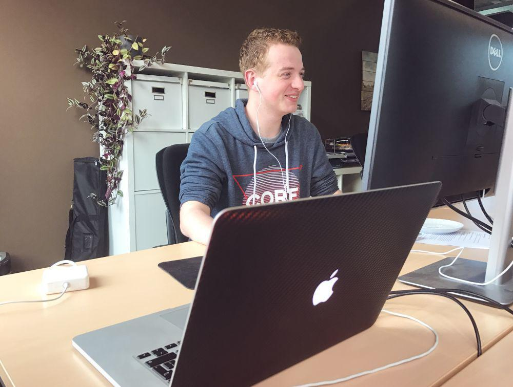

Dit is een pagina over de opleiding Media Developer, dit is een 4 jarige opleiding.
Bij deze opleiding leer je websites bouwen, zowel front-end als back-end.
De opleiding vindt plaats op de Contactweg 36 in Amsterdam. Door het busstation voor de school, is
de school heel toegankelijk. Vanaf Sloterdijk ben je ongeveer 10 minuten bezig en vanaf Amsterdam CS
ongeveer 20 à 15 minuten.
De opleiding is een BOL opleiding, om mee te kunnen doen aan deze opleiding moet je minimaal een VMBO-KB diploma in bezit hebben.
Waarom MA?
Het Media College steekt overal aandacht in. Van zelfontwikkeling tot stagebegeleiding.
Extra hulp nodig? Geen probleem, bij MA is dit in alle soorten mogelijk. Wil je versnellen?
Bij MA is dit mogelijk, ook als je je verveelt kan je je inschrijven voor een extra club.
Toch niet de opleiding die je wilde hebben? Wij bij MA geven de mogelijkheid om kort na je
studie keuze te wisselen van studie.
Wat ga je leren?
Bij de opleiding Media Developer krijg je een uitgebreide studie.
Het omgaan met databases.
Websites bouwen, van niets tot eind.
Hoe een project in elkaar steekt.
En nog veel en veel meer!
Wat zeggen onze studenten?
Bob Sloper, 2e jaars Student.
"Deze school is heel erg bijzonder, er wordt veel aandacht gestoken
in de leeromgeving. Daarnaast is iedereen bijzonder in zijn eigen ding.
Het is soms even raar opkijken maar je went er wel aan.
"

Harry Weethetniet
"De school was voor mij een enorme stap richting mijn eigen bedrijf. Ik heb
naast web development ook dingen geleerd zoals een eigen onderneming starten, klanten trekken, en ga
zo maar door!
"
Klaas Doethetgewoon
"Ik heb hier een mooie tijd gehad, tijdens het leren voor je eindexamen begeleid
de school je heel erg goed. Je krijgt overal tijd en ruimte voor. Er moet wel iets gedaan worden aan
de stoelen, na 3 jaar krijg je er echt een scheve rug van!!!
"
Contacteer MA
Je kunt ons bereiken via de volgende mogelijkheden:
Telefoon: (020) 850-9500
Adres: Contactweg 36, 1014 AN Amsterdam.
Mail: info@ma-web.nl